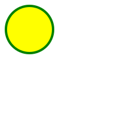

<!-- 
    SVG 
    É uma marcação, estilo html que nao é para textos e sim para fazer imagens 

    Para entender melhor : 
    - Imagem rasterizada  x Imagem vetorizada

    Beneficios: 
    - Mais leve 
    - Mais detalhada
    - Maior acessibilidade e SEO
    - Poder ser editado via Css ou atributos

    Desvantagens:
    - Poder ser mais complicado de trabalhar
    - Quanto mais complexa a imagem, mais trabalho para o navegador
    - Navegadores mais antigos não possuem suporte para essa tag

    Para fotografias, ainda prefira usar imagens .png, .jpg, .jpeg etc...
 -->
 
 <svg style="background-color: brown" width="200" height="200">
     <circle
     cx="100"
    cy="100"
    r="100"
    stroke="yellow"
    stroke-width="4"
    fill="black"
    />
</svg>


<svg width="300" height="200">
    <rect
    width="100%"
    height="100%"
    stroke="blue"
    stroke-width="4"
    fill="yellow"
    />
</svg>
